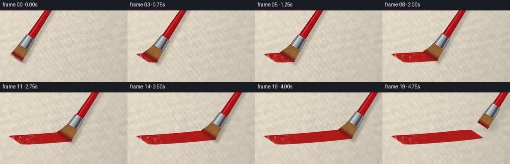
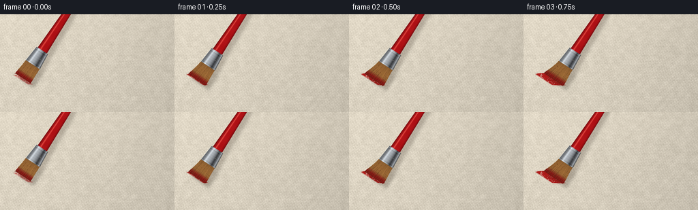
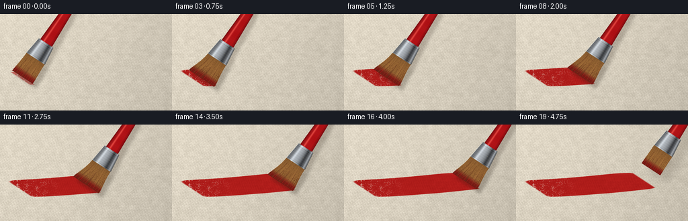
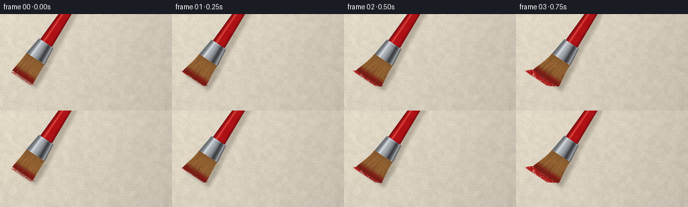

CODING AGENTS AS PIXEL WORLD MODELS
traex/GPT-6.1-Sol · mechanics_0046
点击播放 · 原生 RGB 像素
逐轮保存的候选
回放视频、检查图与代码变化。
每份候选均可单独播放。实际图片检查记录在下方工具轨迹中。
候选 01播放与检查图
点击播放 · 原生 RGB 像素


展开代码变化
--- 上一保存版本
+++ 本次保存版本
@@ -0,0 +1,199 @@
+from pathlib import Path
+import numpy as np
+from PIL import Image, ImageDraw, ImageFilter
+import artifact_io
+
+ROOT = Path(__file__).resolve().parent
+W,H,S=256,144,4
+WW,HH=W*S,H*S
+rng=np.random.default_rng(4628)
+y,x=np.mgrid[0:HH,0:WW].astype(float)
+x/=S;y/=S
+
+def noise_grid(w,h,seed,blur=0):
+ r=np.random.default_rng(seed)
+ a=Image.fromarray(np.uint8(r.uniform(0,255,(h,w))))
+ a=a.resize((WW,HH),Image.Resampling.BICUBIC)
+ if blur:a=a.filter(ImageFilter.GaussianBlur(blur*S))
+ return np.asarray(a).astype(float)/255-.5
+
+# The support is a relief woven from alternating, imperfect cotton threads.
+low=noise_grid(43,25,3)
+fine=noise_grid(256,144,8)
+warp=x + .19*y+.14*np.sin(y*.75)
+weft=y-.026*x+.11*np.sin(x*.41)
+px=2.5;py=2.25
+sx=np.sin(warp*2*np.pi/px); sy=np.sin(weft*2*np.pi/py)
+ix=np.floor(warp/px);iy=np.floor(weft/py)
+interlace=np.cos(np.pi*(ix+iy))
+height=.24*np.cos(warp*2*np.pi/px)+.23*np.cos(weft*2*np.pi/py)+.14*interlace*np.cos(warp*np.pi/px)*np.cos(weft*np.pi/py)+.10*fine
+texture=5.4*sx+5.0*sy+3.5*np.cos(warp*2*np.pi/px)*np.cos(weft*2*np.pi/py)+4*interlace+13*fine+10*low
+illum=1.018-.09*(x/W)-.040*(y/H)-.045*((x-110)/200)**2
+base=np.stack([226+texture,217+texture,199+texture],axis=-1)*illum[...,None]
+base=np.clip(base,0,255)
+# Small striations along the threads retain the fibrous quality in the unpainted ground.
+base+= (1.4*np.sin(weft*2*np.pi/py*7)+1*np.sin(warp*2*np.pi/px*8))[...,None]
+canvas=Image.fromarray(np.uint8(np.clip(base,0,255)))
+# Slightly soften the distant part of the canvas, leaving the bristle contact in focus.
+soft=canvas.filter(ImageFilter.GaussianBlur(.33*S))
+focus=np.clip((65-y)/60,0,.66)
+background=np.asarray(canvas)*(1-focus[...,None])+np.asarray(soft)*focus[...,None]
+
+D=np.array([.55,-.83516465]); N=np.array([.83516465,.55])
+contact_x=np.array([35,36,41,49,58,68,78,89,100,111,122,133,144,155,166,176,184,190,193,195.])
+contact_y=96-.080*(contact_x-35)+1.2*np.sin((contact_x-35)/46)
+pressure=np.array([.25,.62,.90,1,1,1,1,.99,.96,.96,1,1,.98,.98,.96,.93,.85,.65,.17,0])
+# Individual bristle identities and paint-filled gaps stay coherent between frames.
+strand_rng=np.random.default_rng(71)
+strand_data=[]
+for i in range(155):
+ u=(i/154*2-1)*11.9
+ strand_data.append((u,strand_rng.uniform(-.6,.6),strand_rng.uniform(.8,1.18),strand_rng.uniform(.20,.47),strand_rng.uniform(-15,15)))
+
+def bezier(p0,p1,p2,p3,t):
+ t=np.asarray(t)[:,None]
+ return (1-t)**3*p0+3*(1-t)**2*t*p1+3*(1-t)*t*t*p2+t**3*p3
+
+def poly(draw,pts,fill):
+ draw.polygon([(float(a*S),float(b*S)) for a,b in pts],fill=fill)
+
+def line(draw,pts,fill,width):
+ draw.line([(float(a*S),float(b*S)) for a,b in pts],fill=fill,width=max(1,round(width*S)),joint='curve')
+
+def bristle_paths(C,p):
+ paths=[]
+ for u,j,ratio,width,shade in strand_data:
+ root=C+D*27+N*u
+ tip=C+N*(u*(1.02+.38*p))+np.array([-4.7*p+j, .8*p+j*.4])
+ ctrl1=root-D*12+np.array([-.9*p,0])
+ ctrl2=tip+D*(7-2*p)+np.array([2*p,-.7*p])
+ points=bezier(root,ctrl1,ctrl2,tip,np.linspace(0,1,36))
+ paths.append((points,width,shade,ratio))
+ return paths
+
+# Lay down the bristle tracks on a persistent film rather than drawing a moving red patch.
+paint_mask=np.zeros((HH,WW),float)
+paint_thick=np.zeros_like(paint_mask)
+frames=[]
+for f in range(20):
+ cx,cy=contact_x[f],contact_y[f]
+ p=pressure[f]
+ if f<18:
+ # The stamp's angled leading edge follows the spread bristle tips.
+ if f==0: sample_x=[cx]
+ else: sample_x=np.linspace(contact_x[f-1],cx,round((cx-contact_x[f-1])*S)+2)
+ for xx in sample_x:
+ yy=96-.08*(xx-35)+1.2*np.sin((xx-35)/46)
+ pr=p if f==0 else pressure[f-1]+(p-pressure[f-1])*((xx-contact_x[f-1])/max(cx-contact_x[f-1],.001))
+ # Local position perpendicular to a splayed, oblique flat-brush edge.
+ u=(y-yy)/N[1]
+ endpoint=xx+N[0]*u-4.7*pr
+ edge_jitter=.30*np.sin(u*3.9)+.16*np.sin(u*11.2)
+ across=np.clip((11.9*(1.02+.38*pr)-abs(u)+edge_jitter)*1.8,0,1)
+ along=np.clip(1.7-abs(x-endpoint)*.36,0,1)
+ stamp=across*along*min(1,.25+1.5*pr)
+ paint_mask=np.maximum(paint_mask,stamp)
+ paint_thick=np.maximum(paint_thick,stamp*(.50+.42*pr))
+ # Paint microstructure: red oil paint settling into the high points of the weave.
+ yc=96-.08*(x-35)+1.2*np.sin((x-35)/46)
+ v=y-yc
+ ridge=(.52*np.sin(v*5.2+.12*np.sin(x*.08))+.26*np.sin(v*11.1+.25*np.sin(x*.16))+.18*np.sin(v*17.6))
+ ridgelight=np.maximum(0,np.cos(v*5.2+.12*np.sin(x*.08)))**14
+ coverage=paint_mask.copy()
+ pores=(fine+.46*low+.13*np.cos(warp*2*np.pi/px)*np.cos(weft*2*np.pi/py))
+ # A few dry pinholes are left in the tail, but the leading region is glossy and loaded.
+ dry=np.clip((pores-.24)*7,0,.58)*np.clip((90-x)/65,0,1)
+ coverage*=1-dry
+ age=np.maximum(0,cx-x)
+ wet=.7+.3*np.exp(-age/75)
+ ctex=2.3*sx+1.9*sy+3*fine
+ brightness=7*ridge+ctex+4*low
+ red=np.stack([173+brightness*1.3,27+brightness*.57,25+brightness*.50],axis=-1)
+ red+= (ridgelight*wet*13)[...,None]*np.array([1,.65,.50])
+ # The raised top edge catches a narrow studio reflection.
+ grad_y=np.gradient(paint_mask,axis=0)*S
+ edge_light=np.clip(grad_y,0,1.3)*9
+ red+=edge_light[...,None]*np.array([1.4,.70,.55])
+ glint=(np.maximum(0,np.sin(v*8.6+.13*np.sin(x*.1)))**48)*np.maximum(0,fine+.10)*wet*25
+ red+=glint[...,None]*np.array([1,.78,.65])
+ arr=background*(1-coverage[...,None])+red*coverage[...,None]
+ img=Image.fromarray(np.uint8(np.clip(arr,0,255)))
+ # The brush rises at the end; bent fibres relax and their cast shadow broadens.
+ lift=0 if f<18 else (f-17)*8.0
+ C=np.array([cx+lift*.38,cy-lift])
+ if f==0:C[1]-=2
+ paths=bristle_paths(C,p)
+ shadow=Image.new('RGBA',(WW,HH))
+ sd=ImageDraw.Draw(shadow)
+ shoff=np.array([5+lift*.33,7+lift*.25])
+ outline=[paths[0][0][0],paths[-1][0][0],paths[-1][0][-1],paths[0][0][-1]]
+ poly(sd,[a+shoff for a in outline],(37,26,15,65 if lift<1 else 40))
+ # Cast ferrule and handle shadows are soft, unlike the contact shadow.
+ polygon=[C+D*24+N*12,C+D*49+N*9,C+D*142+N*4,C+D*145-N*4,C+D*49-N*9,C+D*24-N*12]
+ poly(sd,[a+shoff for a in polygon],(41,28,18,54 if lift<1 else 29))
+ shadow=shadow.filter(ImageFilter.GaussianBlur((2.2+lift*.13)*S))
+ img=Image.alpha_composite(img.convert('RGBA'),shadow)
+ draw=ImageDraw.Draw(img)
+ # Connected dense core of a flat hog-hair brush.
+ outline=list(paths[0][0])+list(paths[-1][0][::-1])
+ poly(draw,outline,(93,49,25,255))
+ for points,width,shade,ratio in paths:
+ # Tip wetness, individual dark channels, and blonde unpainted roots.
+ for k in range(len(points)-1):
+ q=k/(len(points)-2)
+ t=np.clip((q-.62)/.23,0,1)
+ gold=np.array([155+shade,105+shade*.75,54+shade*.50])
+ wetcolor=np.array([140+shade*.7,24+shade*.15,22+shade*.12])
+ col=gold*(1-t)+wetcolor*t
+ col*=.86+.14*np.sin(np.pi*q)
+ line(draw,points[k:k+2],tuple(np.uint8(np.clip(col,0,255)))+(255,),width)
+ # Subtle wet highlights and separation right at the flexed ends.
+ for j in range(8,155,15):
+ pts=paths[j][0]
+ line(draw,pts[26:35],(194,51,37,255),.23)
+ # Project cylindrical lacquer and highly reflective flattened metal into the image.
+ dx=x-C[0];dy=y-C[1]
+ ss=dx*D[0]+dy*D[1]; uu=dx*N[0]+dy*N[1]
+ handle_width=8.1-3.4*np.clip((ss-47)/103,0,1)
+ handle_mask=(ss>=46)&(ss<=150)&(abs(uu)<handle_width)
+ z=uu/handle_width
+ roundlight=np.sqrt(np.clip(1-z*z,0,1))
+ shine=np.exp(-((z+.40)/.14)**2)
+ warm=np.exp(-((z-.50)/.11)**2)
+ handlecolor=np.stack([100+76*roundlight+55*shine+10*warm,9+9*roundlight+50*shine,13+9*roundlight+40*shine],-1)
+ handlecolor+= (1.8*np.sin(ss*.3)+.7*np.sin(ss*2))[...,None]
+ # Tiny lacquer grain stays longitudinal and gives the handle a real material surface.
+ handlecolor+=np.exp(-((z+.70)/.026)**2)[...,None]*np.array([17,8,5])
+ brusharr=np.asarray(img).copy()
+ brusharr[handle_mask,:3]=np.uint8(np.clip(handlecolor[handle_mask],0,255))
+ width_f=12.3-(ss-24)*.092
+ zm=uu/np.maximum(width_f,1)
+ fm=(ss>=23.8)&(ss<49)&(abs(uu)<width_f)
+ # An irregular studio environment is mirrored as broad silver bands.
+ metal=102+74*np.exp(-((zm+.28)/.45)**2)+58*np.exp(-((zm+.52)/.14)**2)-45*np.exp(-((zm-.43)/.16)**2)+60*np.exp(-((zm-.80)/.09)**2)
+ metal+=3*np.sin(ss*1.8)+1.1*np.sin(uu*19)+1.0*np.sin(ss*14)
+ # Rolled rims and two pressed seams near the grip.
+ metal+=19*np.exp(-((ss-24.8)/.5)**2)-21*np.exp(-((ss-26)/.40)**2)+17*np.exp(-((ss-46.8)/.6)**2)-24*np.exp(-((ss-45.5)/.42)**2)
+ metalcolor=np.stack([metal*.96,metal*.99,metal*1.01+2],-1)
+ brusharr[fm,:3]=np.uint8(np.clip(metalcolor[fm],0,255))
+ img=Image.fromarray(brusharr,'RGBA')
+ draw=ImageDraw.Draw(img)
+ # Thin folded edge emphasizes the crimped ferrule geometry.
+ for side in [-1,1]:
+ pts=[C+D*24+N*(side*12.25),C+D*48.8+N*(side*10.0)]
+ line(draw,pts,(80,81,76,255) if side==1 else (224,223,212,255),.42)
+ # One small punch indentation, not text, on the metal sleeve.
+ for s0 in [36.5]:
+ pt=C+D*s0+N*4.7
+ rad=.66*S
+ draw.ellipse((pt[0]*S-rad,pt[1]*S-rad,pt[0]*S+rad,pt[1]*S+rad),fill=(88,87,78,255))
+ line(draw,[pt+np.array([-.35,.1]),pt+np.array([.35,.1])],(172,173,166,255),.25)
+ # Isolated tiny hair tips remain in actual contact with the rough paint film.
+ if lift==0:
+ for j in [0,1,2,151,153,154]:
+ endpoint=paths[j][0][-1]
+ line(draw,[endpoint,endpoint+np.array([-1.1,.2])],(128,29,24,255),.24)
+ img=img.convert('RGB').resize((W,H),Image.Resampling.LANCZOS)
+ frames.append(np.asarray(img,dtype=np.uint8))
+
+artifact_io.save(np.stack(frames),ROOT)
候选 02播放与检查图
点击播放 · 原生 RGB 像素


展开代码变化
--- 上一保存版本
+++ 本次保存版本
@@ -47,7 +47,7 @@
strand_rng=np.random.default_rng(71)
strand_data=[]
for i in range(155):
- u=(i/154*2-1)*11.9
+ u=(i/154*2-1)*16.0
strand_data.append((u,strand_rng.uniform(-.6,.6),strand_rng.uniform(.8,1.18),strand_rng.uniform(.20,.47),strand_rng.uniform(-15,15)))
def bezier(p0,p1,p2,p3,t):
@@ -63,10 +63,10 @@
def bristle_paths(C,p):
paths=[]
for u,j,ratio,width,shade in strand_data:
- root=C+D*27+N*u
+ root=C+D*35+N*u
tip=C+N*(u*(1.02+.38*p))+np.array([-4.7*p+j, .8*p+j*.4])
- ctrl1=root-D*12+np.array([-.9*p,0])
- ctrl2=tip+D*(7-2*p)+np.array([2*p,-.7*p])
+ ctrl1=root-D*16+np.array([-.9*p,0])
+ ctrl2=tip+D*(9-3*p)+np.array([2*p,-.7*p])
points=bezier(root,ctrl1,ctrl2,tip,np.linspace(0,1,36))
paths.append((points,width,shade,ratio))
return paths
@@ -88,8 +88,8 @@
# Local position perpendicular to a splayed, oblique flat-brush edge.
u=(y-yy)/N[1]
endpoint=xx+N[0]*u-4.7*pr
- edge_jitter=.30*np.sin(u*3.9)+.16*np.sin(u*11.2)
- across=np.clip((11.9*(1.02+.38*pr)-abs(u)+edge_jitter)*1.8,0,1)
+ edge_jitter=.40*np.sin(u*3.9)+.24*np.sin(u*11.2)+.21*np.sin(xx*1.5+u*2.3)
+ across=np.clip((16.0*(1.02+.38*pr)-abs(u)+edge_jitter)*1.8,0,1)
along=np.clip(1.7-abs(x-endpoint)*.36,0,1)
stamp=across*along*min(1,.25+1.5*pr)
paint_mask=np.maximum(paint_mask,stamp)
@@ -107,14 +107,14 @@
age=np.maximum(0,cx-x)
wet=.7+.3*np.exp(-age/75)
ctex=2.3*sx+1.9*sy+3*fine
- brightness=7*ridge+ctex+4*low
+ brightness=10*ridge+ctex+4*low
red=np.stack([173+brightness*1.3,27+brightness*.57,25+brightness*.50],axis=-1)
- red+= (ridgelight*wet*13)[...,None]*np.array([1,.65,.50])
+ red+= (ridgelight*wet*24)[...,None]*np.array([1,.70,.56])
# The raised top edge catches a narrow studio reflection.
grad_y=np.gradient(paint_mask,axis=0)*S
edge_light=np.clip(grad_y,0,1.3)*9
red+=edge_light[...,None]*np.array([1.4,.70,.55])
- glint=(np.maximum(0,np.sin(v*8.6+.13*np.sin(x*.1)))**48)*np.maximum(0,fine+.10)*wet*25
+ glint=(np.maximum(0,np.sin(v*8.6+.13*np.sin(x*.1)))**48)*np.maximum(0,fine+.10)*wet*42
red+=glint[...,None]*np.array([1,.78,.65])
arr=background*(1-coverage[...,None])+red*coverage[...,None]
img=Image.fromarray(np.uint8(np.clip(arr,0,255)))
@@ -129,7 +129,7 @@
outline=[paths[0][0][0],paths[-1][0][0],paths[-1][0][-1],paths[0][0][-1]]
poly(sd,[a+shoff for a in outline],(37,26,15,65 if lift<1 else 40))
# Cast ferrule and handle shadows are soft, unlike the contact shadow.
- polygon=[C+D*24+N*12,C+D*49+N*9,C+D*142+N*4,C+D*145-N*4,C+D*49-N*9,C+D*24-N*12]
+ polygon=[C+D*33+N*16,C+D*61+N*12,C+D*152+N*5,C+D*155-N*5,C+D*61-N*12,C+D*33-N*16]
poly(sd,[a+shoff for a in polygon],(41,28,18,54 if lift<1 else 29))
shadow=shadow.filter(ImageFilter.GaussianBlur((2.2+lift*.13)*S))
img=Image.alpha_composite(img.convert('RGBA'),shadow)
@@ -154,8 +154,8 @@
# Project cylindrical lacquer and highly reflective flattened metal into the image.
dx=x-C[0];dy=y-C[1]
ss=dx*D[0]+dy*D[1]; uu=dx*N[0]+dy*N[1]
- handle_width=8.1-3.4*np.clip((ss-47)/103,0,1)
- handle_mask=(ss>=46)&(ss<=150)&(abs(uu)<handle_width)
+ handle_width=10.5-4.5*np.clip((ss-60)/103,0,1)
+ handle_mask=(ss>=59)&(ss<=170)&(abs(uu)<handle_width)
z=uu/handle_width
roundlight=np.sqrt(np.clip(1-z*z,0,1))
shine=np.exp(-((z+.40)/.14)**2)
@@ -166,24 +166,24 @@
handlecolor+=np.exp(-((z+.70)/.026)**2)[...,None]*np.array([17,8,5])
brusharr=np.asarray(img).copy()
brusharr[handle_mask,:3]=np.uint8(np.clip(handlecolor[handle_mask],0,255))
- width_f=12.3-(ss-24)*.092
+ width_f=16.4-(ss-33)*.12
zm=uu/np.maximum(width_f,1)
- fm=(ss>=23.8)&(ss<49)&(abs(uu)<width_f)
+ fm=(ss>=32.8)&(ss<61)&(abs(uu)<width_f)
# An irregular studio environment is mirrored as broad silver bands.
metal=102+74*np.exp(-((zm+.28)/.45)**2)+58*np.exp(-((zm+.52)/.14)**2)-45*np.exp(-((zm-.43)/.16)**2)+60*np.exp(-((zm-.80)/.09)**2)
metal+=3*np.sin(ss*1.8)+1.1*np.sin(uu*19)+1.0*np.sin(ss*14)
# Rolled rims and two pressed seams near the grip.
- metal+=19*np.exp(-((ss-24.8)/.5)**2)-21*np.exp(-((ss-26)/.40)**2)+17*np.exp(-((ss-46.8)/.6)**2)-24*np.exp(-((ss-45.5)/.42)**2)
+ metal+=19*np.exp(-((ss-33.8)/.5)**2)-21*np.exp(-((ss-35)/.40)**2)+17*np.exp(-((ss-58.8)/.6)**2)-24*np.exp(-((ss-57.5)/.42)**2)
metalcolor=np.stack([metal*.96,metal*.99,metal*1.01+2],-1)
brusharr[fm,:3]=np.uint8(np.clip(metalcolor[fm],0,255))
- img=Image.fromarray(brusharr,'RGBA')
+ img=Image.fromarray(brusharr)
draw=ImageDraw.Draw(img)
# Thin folded edge emphasizes the crimped ferrule geometry.
for side in [-1,1]:
- pts=[C+D*24+N*(side*12.25),C+D*48.8+N*(side*10.0)]
+ pts=[C+D*33+N*(side*16.35),C+D*60.8+N*(side*13.0)]
line(draw,pts,(80,81,76,255) if side==1 else (224,223,212,255),.42)
# One small punch indentation, not text, on the metal sleeve.
- for s0 in [36.5]:
+ for s0 in [46.5]:
pt=C+D*s0+N*4.7
rad=.66*S
draw.ellipse((pt[0]*S-rad,pt[1]*S-rad,pt[0]*S+rad,pt[1]*S+rad),fill=(88,87,78,255))
可观测工具轨迹
实际执行的命令与返回图片。
命令 1exit 0
/bin/bash -lc 'ls -la && cat prompt.txt && cat GENERATION_RULES.md && cat task_spec.json'
命令 2exit 0
/bin/bash -lc "cat artifact_io.py && python - <<'PY'
import numpy, PIL
print('ok')
PY"命令 3exit 0
/bin/bash -lc "cat > generate.py <<'PY'
from pathlib import Path
import numpy as np
from PIL import Image, ImageDraw, ImageFilter
import artifact_io
ROOT = Path(__file__).resolve().parent
W,H,S=256,144,4
WW,HH=W*S,H*S
rng=np.random.default_rng(4628)
y,x=np.mgrid[0:HH,0:WW].astype(float)
x/=S;y/=S
def noise_grid(w,h,seed,blur=0):
r=np.random.default_rng(seed)
a=Image.fromarray(np.uint8(r.uniform(0,255,(h,w))))
a=a.resize((WW,HH),Image.Resampling.BICUBIC)
if blur:a=a.filter(ImageFilter.GaussianBlur(blur*S))
return np.asarray(a).astype(float)/255-.5
# The support is a relief woven from alternating, imperfect cotton threads.
low=noise_grid(43,25,3)
fine=noise_grid(256,144,8)
warp=x + .19*y+.14*np.sin(y*.75)
weft=y-.026*x+.11*np.sin(x*.41)
px=2.5;py=2.25
sx=np.sin(warp*2*np.pi/px); sy=np.sin(weft*2*np.pi/py)
ix=np.floor(warp/px);iy=np.floor(weft/py)
interlace=np.cos(np.pi*(ix+iy))
height=.24*np.cos(warp*2*np.pi/px)+.23*np.cos(weft*2*np.pi/py)+.14*interlace*np.cos(warp*np.pi/px)*np.cos(weft*np.pi/py)+.10*fine
texture=5.4*sx+5.0*sy+3.5*np.cos(warp*2*np.pi/px)*np.cos(weft*2*np.pi/py)+4*interlace+13*fine+10*low
illum=1.018-.09*(x/W)-.040*(y/H)-.045*((x-110)/200)**2
base=np.stack([226+texture,217+texture,199+texture],axis=-1)*illum[...,None]
base=np.clip(base,0,255)
# Small striations along the threads retain the fibrous quality in the unpainted ground.
base+= (1.4*np.sin(weft*2*np.pi/py*7)+1*np.sin(warp*2*np.pi/px*8))[...,None]
canvas=Image.fromarray(np.uint8(np.clip(base,0,255)))
# Slightly soften the distant part of the canvas, leaving the bristle contact in focus.
soft=canvas.filter(ImageFilter.GaussianBlur(.33*S))
focus=np.clip((65-y)/60,0,.66)
background=np.asarray(canvas)*(1-focus[...,None])+np.asarray(soft)*focus[...,None]
D=np.array([.55,-.83516465]); N=np.array([.83516465,.55])
contact_x=np.array([35,36,41,49,58,68,78,89,100,111,122,133,144,155,166,176,184,190,193,195.])
contact_y=96-.080*(contact_x-35)+1.2*np.sin((contact_x-35)/46)
pressure=np.array([.25,.62,.90,1,1,1,1,.99,.96,.96,1,1,.98,.98,.96,.93,.85,.65,.17,0])
# Individual bristle identities and paint-filled gaps stay coherent between frames.
strand_rng=np.random.default_rng(71)
strand_data=[]
for i in range(155):
u=(i/154*2-1)*11.9
strand_data.append((u,strand_rng.uniform(-.6,.6),strand_rng.uniform(.8,1.18),strand_rng.uniform(.20,.47),strand_rng.uniform(-15,15)))
def bezier(p0,p1,p2,p3,t):
t=np.asarray(t)[:,None]
return (1-t)**3*p0+3*(1-t)**2*t*p1+3*(1-t)*t*t*p2+t**3*p3
def poly(draw,pts,fill):
draw.polygon([(float(a*S),float(b*S)) for a,b in pts],fill=fill)
def line(draw,pts,fill,width):
draw.line([(float(a*S),float(b*S)) for a,b in pts],fill=fill,width=max(1,round(width*S)),joint='curve')
def bristle_paths(C,p):
paths=[]
for u,j,ratio,width,shade in strand_data:
root=C+D*27+N*u
tip=C+N*(u*(1.02+.38*p))+np.array([-4.7*p+j, .8*p+j*.4])
ctrl1=root-D*12+np.array([-.9*p,0])
ctrl2=tip+D*(7-2*p)+np.array([2*p,-.7*p])
points=bezier(root,ctrl1,ctrl2,tip,np.linspace(0,1,36))
paths.append((points,width,shade,ratio))
return paths
# Lay down the bristle tracks on a persistent film rather than drawing a moving red patch.
paint_mask=np.zeros((HH,WW),float)
paint_thick=np.zeros_like(paint_mask)
frames=[]
for f in range(20):
cx,cy=contact_x[f],contact_y[f]
p=pressure[f]
if f<18:
# The stamp's angled leading edge follows the spread bristle tips.
if f==0: sample_x=[cx]
else: sample_x=np.linspace(contact_x[f-1],cx,round((cx-contact_x[f-1])*S)+2)
for xx in sample_x:
yy=96-.08*(xx-35)+1.2*np.sin((xx-35)/46)
pr=p if f==0 else pressure[f-1]+(p-pressure[f-1])*((xx-contact_x[f-1])/max(cx-contact_x[f-1],.001))
# Local position perpendicular to a splayed, oblique flat-brush edge.
u=(y-yy)/N[1]
endpoint=xx+N[0]*u-4.7*pr
edge_jitter=.30*np.sin(u*3.9)+.16*np.sin(u*11.2)
across=np.clip((11.9*(1.02+.38*pr)-abs(u)+edge_jitter)*1.8,0,1)
along=np.clip(1.7-abs(x-endpoint)*.36,0,1)
stamp=across*along*min(1,.25+1.5*pr)
paint_mask=np.maximum(paint_mask,stamp)
paint_thick=np.maximum(paint_thick,stamp*(.50+.42*pr))
# Paint microstructure: red oil paint settling into the high points of the weave.
yc=96-.08*(x-35)+1.2*np.sin((x-35)/46)
v=y-yc
ridge=(.52*np.sin(v*5.2+.12*np.sin(x*.08))+.26*np.sin(v*11.1+.25*np.sin(x*.16))+.18*np.sin(v*17.6))
ridgelight=np.maximum(0,np.cos(v*5.2+.12*np.sin(x*.08)))**14
coverage=paint_mask.copy()
pores=(fine+.46*low+.13*np.cos(warp*2*np.pi/px)*np.cos(weft*2*np.pi/py))
# A few dry pinholes are left in the tail, but the leading region is glossy and loaded.
dry=np.clip((pores-.24)*7,0,.58)*np.clip((90-x)/65,0,1)
coverage*=1-dry
age=np.maximum(0,cx-x)
wet=.7+.3*np.exp(-age/75)
ctex=2.3*sx+1.9*sy+3*fine
brightness=7*ridge+ctex+4*low
red=np.stack([173+brightness*1.3,27+brightness*.57,25+brightness*.50],axis=-1)
red+= (ridgelight*wet*13)[...,None]*np.array([1,.65,.50])
# The raised top edge catches a narrow studio reflection.
grad_y=np.gradient(paint_mask,axis=0)*S
edge_light=np.clip(grad_y,0,1.3)*9
red+=edge_light[...,None]*np.array([1.4,.70,.55])
glint=(np.maximum(0,np.sin(v*8.6+.13*np.sin(x*.1)))**48)*np.maximum(0,fine+.10)*wet*25
red+=glint[...,None]*np.array([1,.78,.65])
arr=background*(1-coverage[...,None])+red*coverage[...,None]
img=Image.fromarray(np.uint8(np.clip(arr,0,255)))
# The brush rises at the end; bent fibres relax and their cast shadow broadens.
lift=0 if f<18 else (f-17)*8.0
C=np.array([cx+lift*.38,cy-lift])
if f==0:C[1]-=2
paths=bristle_paths(C,p)
shadow=Image.new('RGBA',(WW,HH))
sd=ImageDraw.Draw(shadow)
shoff=np.array([5+lift*.33,7+lift*.25])
outline=[paths[0][0][0],paths[-1][0][0],paths[-1][0][-1],paths[0][0][-1]]
poly(sd,[a+shoff for a in outline],(37,26,15,65 if lift<1 else 40))
# Cast ferrule and handle shadows are soft, unlike the contact shadow.
polygon=[C+D*24+N*12,C+D*49+N*9,C+D*142+N*4,C+D*145-N*4,C+D*49-N*9,C+D*24-N*12]
poly(sd,[a+shoff for a in polygon],(41,28,18,54 if lift<1 else 29))
shadow=shadow.filter(ImageFilter.GaussianBlur((2.2+lift*.13)*S))
img=Image.alpha_composite(img.convert('RGBA'),shadow)
draw=ImageDraw.Draw(img)
# Connected dense core of a flat hog-hair brush.
outline=list(paths[0][0])+list(paths[-1][0][::-1])
poly(draw,outline,(93,49,25,255))
for points,width,shade,ratio in paths:
# Tip wetness, individual dark channels, and blonde unpainted roots.
for k in range(len(points)-1):
q=k/(len(points)-2)
t=np.clip((q-.62)/.23,0,1)
gold=np.array([155+shade,105+shade*.75,54+shade*.50])
wetcolor=np.array([140+shade*.7,24+shade*.15,22+shade*.12])
col=gold*(1-t)+wetcolor*t
col*=.86+.14*np.sin(np.pi*q)
line(draw,points[k:k+2],tuple(np.uint8(np.clip(col,0,255)))+(255,),width)
# Subtle wet highlights and separation right at the flexed ends.
for j in range(8,155,15):
pts=paths[j][0]
line(draw,pts[26:35],(194,51,37,255),.23)
# Project cylindrical lacquer and highly reflective flattened metal into the image.
dx=x-C[0];dy=y-C[1]
ss=dx*D[0]+dy*D[1]; uu=dx*N[0]+dy*N[1]
handle_width=8.1-3.4*np.clip((ss-47)/103,0,1)
handle_mask=(ss>=46)&(ss<=150)&(abs(uu)<handle_width)
z=uu/handle_width
roundlight=np.sqrt(np.clip(1-z*z,0,1))
shine=np.exp(-((z+.40)/.14)**2)
warm=np.exp(-((z-.50)/.11)**2)
handlecolor=np.stack([100+76*roundlight+55*shine+10*warm,9+9*roundlight+50*shine,13+9*roundlight+40*shine],-1)
handlecolor+= (1.8*np.sin(ss*.3)+.7*np.sin(ss*2))[...,None]
# Tiny lacquer grain stays longitudinal and gives the handle a real material surface.
handlecolor+=np.exp(-((z+.70)/.026)**2)[...,None]*np.array([17,8,5])
brusharr=np.asarray(img).copy()
brusharr[handle_mask,:3]=np.uint8(np.clip(handlecolor[handle_mask],0,255))
width_f=12.3-(ss-24)*.092
zm=uu/np.maximum(width_f,1)
fm=(ss>=23.8)&(ss<49)&(abs(uu)<width_f)
# An irregular studio environment is mirrored as broad silver bands.
metal=102+74*np.exp(-((zm+.28)/.45)**2)+58*np.exp(-((zm+.52)/.14)**2)-45*np.exp(-((zm-.43)/.16)**2)+60*np.exp(-((zm-.80)/.09)**2)
metal+=3*np.sin(ss*1.8)+1.1*np.sin(uu*19)+1.0*np.sin(ss*14)
# Rolled rims and two pressed seams near the grip.
metal+=19*np.exp(-((ss-24.8)/.5)**2)-21*np.exp(-((ss-26)/.40)**2)+17*np.exp(-((ss-46.8)/.6)**2)-24*np.exp(-((ss-45.5)/.42)**2)
metalcolor=np.stack([metal*.96,metal*.99,metal*1.01+2],-1)
brusharr[fm,:3]=np.uint8(np.clip(metalcolor[fm],0,255))
img=Image.fromarray(brusharr,'RGBA')
draw=ImageDraw.Draw(img)
# Thin folded edge emphasizes the crimped ferrule geometry.
for side in [-1,1]:
pts=[C+D*24+N*(side*12.25),C+D*48.8+N*(side*10.0)]
line(draw,pts,(80,81,76,255) if side==1 else (224,223,212,255),.42)
# One small punch indentation, not text, on the metal sleeve.
for s0 in [36.5]:
pt=C+D*s0+N*4.7
rad=.66*S
draw.ellipse((pt[0]*S-rad,pt[1]*S-rad,pt[0]*S+rad,pt[1]*S+rad),fill=(88,87,78,255))
line(draw,[pt+np.array([-.35,.1]),pt+np.array([.35,.1])],(172,173,166,255),.25)
# Isolated tiny hair tips remain in actual contact with the rough paint film.
if lift==0:
for j in [0,1,2,151,153,154]:
endpoint=paths[j][0][-1]
line(draw,[endpoint,endpoint+np.array([-1.1,.2])],(128,29,24,255),.24)
img=img.convert('RGB').resize((W,H),Image.Resampling.LANCZOS)
frames.append(np.asarray(img,dtype=np.uint8))
artifact_io.save(np.stack(frames),ROOT)
PY
python generate.py"命令 4exit 0
/bin/bash -lc "cp inspection.png .tmp/first_inspection.png
python - <<'PY'
p='generate.py'
s=open(p).read().replace('*11.9','*16.0').replace('11.9*(1.02','16.0*(1.02')
s=s.replace('C+D*27+N*u','C+D*35+N*u').replace('root-D*12','root-D*16').replace('D*(7-2*p)','D*(9-3*p)')
s=s.replace('edge_jitter=.30*np.sin(u*3.9)+.16*np.sin(u*11.2)','edge_jitter=.40*np.sin(u*3.9)+.24*np.sin(u*11.2)+.21*np.sin(xx*1.5+u*2.3)')
s=s.replace('13)[...,None]*np.array([1,.65,.50])','24)[...,None]*np.array([1,.70,.56])')
s=s.replace('wet*25','wet*42')
s=s.replace('7*ridge+ctex+4*low','10*ridge+ctex+4*low')
s=s.replace('C+D*24+N*12,C+D*49+N*9,C+D*142+N*4,C+D*145-N*4,C+D*49-N*9,C+D*24-N*12','C+D*33+N*16,C+D*61+N*12,C+D*152+N*5,C+D*155-N*5,C+D*61-N*12,C+D*33-N*16')
s=s.replace('8.1-3.4*np.clip((ss-47)/103','10.5-4.5*np.clip((ss-60)/103').replace('(ss>=46)&(ss<=150)','(ss>=59)&(ss<=170)')
s=s.replace('12.3-(ss-24)*.092','16.4-(ss-33)*.12').replace('(ss>=23.8)&(ss<49)','(ss>=32.8)&(ss<61)')
s=s.replace('ss-24.8','ss-33.8').replace('ss-26','ss-35').replace('ss-46.8','ss-58.8').replace('ss-45.5','ss-57.5')
s=s.replace('C+D*24+N*(side*12.25),C+D*48.8+N*(side*10.0)','C+D*33+N*(side*16.35),C+D*60.8+N*(side*13.0)')
s=s.replace('[36.5]','[46.5]').replace(\"Image.fromarray(brusharr,'RGBA')\",\"Image.fromarray(brusharr)\")
open(p,'w').write(s)
PY
python generate.py"命令 5exit 0
/bin/bash -lc "python - <<'PY'
from pathlib import Path
import numpy as np
from PIL import Image
p=Path('.')
a=np.load(p/'pixels.npz')['pixels']
assert a.shape == (144,256,20)
assert len(list((p/'frames').glob('*.png'))) == 20
assert Image.open(p/'frames/00.png').mode == 'RGB'
assert (p/'index.html').is_file()
print('Verified: 20 RGB frames, 256Ã144, 4 fps. Required artifacts exist.')
PY"视觉工具实际返回图片 1

视觉工具实际返回图片 2

保存候选 2 份；完成命令 5 次；可验证图片返回 2 张。原始 API 响应与完整日志保留在本地。